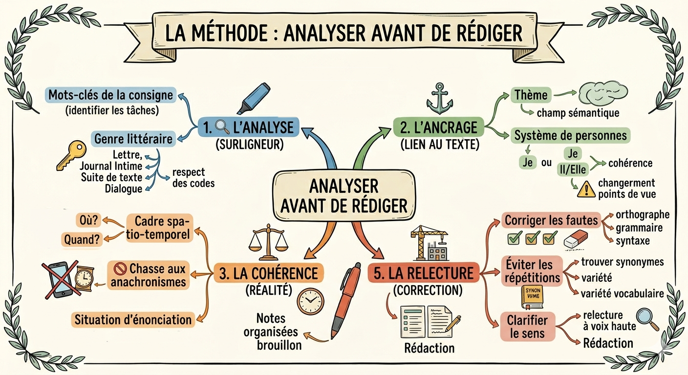
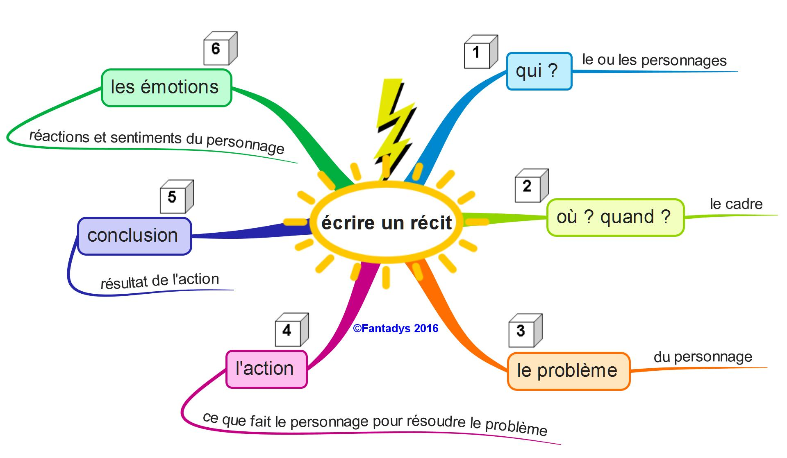

L'écriture d'invention au brevet
La méthode : analyser avant de rédiger
Qu'est-ce que l'écriture d'invention ?
L'écriture d'invention est le deuxième sujet de l'épreuve de français au brevet. Elle compte pour 40 points sur 100. On vous demande de produire un texte original en respectant des contraintes précises : un genre, une longueur, un lien avec le texte étudié en première partie.
La règle d'or : ne jamais commencer à écrire avant d'avoir analysé la consigne. Cinq minutes de réflexion valent mieux que deux pages hors-sujet.
Le barème (40 points)
Les 5 étapes de la méthode
L'analyse — le surligneur
Avant même de chercher une idée, surlignez les mots-clés de la consigne et reformulez ce que l'on attend de vous.
- Quoi ? Suite de texte, dialogue, lettre, journal intime, discours, poème… ?
- Depuis quel point du texte ? (suite, réécriture, prolongement ?)
- Quelle longueur ? (minimum 300 mots en général)
- Quelles contraintes explicites ? (« en prose », « à la 1ère personne », « dans le style de l'auteur »…)
⚠️ Se tromper sur le genre, c'est perdre jusqu'à 14 points de « respect des codes ». C'est l'erreur la plus coûteuse.
L'ancrage — le lien avec le texte
Votre texte doit être enraciné dans le texte de l'épreuve. Ce n'est pas une invention libre : on reste dans l'univers du texte.
- Le thème : reprenez le champ lexical dominant du texte d'origine. Si le texte parle de la mer, votre suite doit rester dans cet univers.
- La personne : si le texte est à la 1ère personne (« je »), votre suite doit l'être aussi sauf consigne contraire. Changer de point de vue en cours de route est une faute grave.
- Les personnages : ne changez pas leurs noms, leur caractère ou leurs relations établis dans le texte.
- Le ton général : un texte réaliste tragique ne devient pas soudainement comique dans votre suite.
La cohérence — la chasse aux anachronismes
C'est l'étape « vérification de la réalité ». Votre texte doit être cohérent avec le cadre du texte source.
- Où ? Précisez le cadre spatial (ville, campagne, mer, intérieur…) en accord avec le texte.
- Quand ? Époque historique : un texte du XIXe siècle n'a pas de smartphone, d'avion ou d'internet !
- Qui parle à qui ? Identifiez le statut du narrateur (interne, externe, omniscient) et ne le changez pas.
- La situation d'énonciation : le destinataire d'une lettre, l'auteur d'un journal intime, l'énonciateur d'un discours doivent rester cohérents.
💡 Astuce anti-anachronisme : avant d'écrire, notez l'époque, le lieu et le registre de langue du texte source, et vérifiez que chaque élément de votre texte y est compatible.
La structure — le brouillon organisé
Pas d'écriture au kilomètre ! Avant de rédiger, faites un brouillon en 5 minutes pour organiser vos idées en paragraphes distincts.
Pour un récit, respectez le schéma narratif :
Pour une suite de texte : reprenez exactement là où le texte s'arrête. Ne résumez pas ce qui précède.
Pour un changement de point de vue : racontez les mêmes événements mais depuis un autre personnage.
La relecture — la correction
Réservez 5 à 10 minutes à la fin pour relire. C'est jusqu'à 6 points récupérables.
- Corriger les fautes : orthographe, accords (sujet/verbe, nom/adjectif), conjugaisons.
- Éviter les répétitions : remplacez les mots répétés par des synonymes ou des pronoms.
- Clarifier le sens : chaque phrase doit être compréhensible. Relisez à voix basse dans votre tête.
- Vérifier la longueur : comptez approximativement le nombre de mots. En dessous du minimum, vous perdez des points.
La règle des 5 fautes
En général, moins de 5 fautes = maximum des points d'orthographe. Chaque faute supplémentaire coûte 0,5 point. Relire est rentable !
Les genres d'écriture au brevet
Comment identifier le genre demandé ?
La consigne indique toujours explicitement ou implicitement le genre. Cherchez les mots-clés : « rédigez une suite », « écrivez une lettre », « imaginez un dialogue », « rédigez un journal intime »…
Puis posez-vous les questions spécifiques à ce genre pour en respecter les codes.
Suite de texte / Récit
- Reprendre exactement là où le texte s'arrête
- Conserver la personne (1ère ou 3ème)
- Conserver le temps du récit (passé simple + imparfait)
- Respecter le registre (réaliste, fantastique…)
- Plusieurs paragraphes organisés logiquement
La lettre
- Lieu et date en haut à droite
- Formule d'appel : Cher…, Madame…, Monsieur…
- Corps de la lettre : introduction, développement, conclusion
- Formule de politesse finale adaptée au destinataire
- Signature (prénom ou nom du personnage)
- Registre de langue adapté au destinataire (soutenu si inconnu)
Le journal intime
- Date en tête d'entrée
- Toujours à la 1ère personne
- Ton intime, subjectif, émotionnel
- Pensées, ressentis, réflexions intérieures
- Peut commencer par une formule : « Cher journal, »
- Présent ou passé composé (temporalité récente)
Le dialogue / La scène de théâtre
- Nom du personnage suivi de deux points, puis réplique
- Didascalies (indications de mise en scène) en italique ou entre parenthèses
- Registre de langue adapté à chaque personnage
- Un vrai échange : questions, réponses, tensions
- Pour le théâtre : indication scénique en début (Scène X)
Le discours / La plaidoirie
- S'adresse directement à un public : Mesdames, Messieurs…
- Registre soutenu
- Structure argumentative : thèse + arguments + exemples + conclusion
- Apostrophes au public, questions rhétoriques
- Formule de clôture percutante
Changement de point de vue
- Raconter les mêmes événements depuis un autre personnage
- Adopter la personne grammaticale du nouveau narrateur
- Exprimer ses pensées, émotions, perceptions propres
- Ne pas changer les faits, seulement le regard porté dessus
Le poème
- Respecter la forme demandée (vers libres ou forme fixe ?)
- Travail sur le rythme, les sonorités, les images
- Figures de style : métaphores, comparaisons, anaphores…
- Si vers : majuscule en début de vers, attention aux rimes si demandées
- Champ lexical en lien avec le thème du texte source
La réécriture / Transposition
- Transformer un passage selon une contrainte : changer d'époque, de genre, de registre
- Conserver le sens et les événements principaux
- Adapter le style, le vocabulaire et les références à la nouvelle contrainte
- Attention aux anachronismes si changement d'époque
Boîte à outils — enrichir son écriture
Connecteurs logiques et temporels
Connecteurs temporels
Connecteurs spatiaux
Connecteurs logiques
Verbes expressifs pour le récit
Verbes de mouvement
Verbes d'émotion
Verbes de perception
Verbes de parole
Figures de style utiles
Comparaison
« Il avançait, tel un fantôme, dans le couloir obscur. »
Métaphore
« La nuit était un manteau de velours posé sur la ville. »
Anaphore
« Il courait. Il criait. Il pleurait. »
Hyperbole
« Elle attendait depuis une éternité. »
Formules clés par genre
Lettre
Journal intime
Discours
Incipit de récit
Pièges à éviter
Le checklist avant de rendre la copie
✅ J'ai identifié et respecté le genre demandé.
✅ Je reste à la même personne grammaticale que le texte source (sauf consigne contraire).
✅ Mon texte est cohérent avec l'époque, le lieu et les personnages du texte original.
✅ J'ai fait un plan et mon texte est organisé en paragraphes distincts.
✅ J'ai relu et corrigé mes fautes d'orthographe et d'accord.
✅ Mon texte dépasse la longueur minimale demandée.
Écrire sans lire la consigne jusqu'au bout
C'est l'erreur numéro 1. Beaucoup d'élèves commencent à écrire dès qu'ils voient « suite du texte » sans lire les contraintes qui suivent.
❌ Consigne lue à moitié : « Écrivez la suite du texte… » → on écrit un récit.
✅ Consigne complète : « …sous forme de lettre que le personnage enverrait à son ami » → c'est une lettre, pas un récit.
Solution : soulignez chaque contrainte de la consigne avant d'écrire un seul mot.
Changer de point de vue sans s'en rendre compte
Commencer à la 1ère personne (« je marchais ») et continuer à la 3ème (« il marchait ») sans consigne en ce sens est une faute très pénalisée.
❌ « Je traversais le pont. Soudain, il entendit un bruit. »
✅ « Je traversais le pont. Soudain, j'entendis un bruit. »
Solution : notez sur votre brouillon « 1ère personne » ou « 3ème personne » et vérifiez lors de la relecture.
Les anachronismes
Faire sortir un smartphone dans un roman du XIXe siècle, ou utiliser des expressions contemporaines dans un dialogue d'époque, brise immédiatement la cohérence.
❌ Dans une suite d'un roman de Zola : « Elle consulta son téléphone et envoya un message. »
✅ « Elle dépêcha un messager à la tombée du soir. »
Solution : notez l'époque du texte sur votre brouillon. En cas de doute sur un objet ou une expression, remplacez-le par un équivalent d'époque.
Oublier les codes formels du genre
Une lettre sans formule de politesse, un journal intime sans date, un dialogue sans nom de personnages : autant d'oublis qui font perdre des points faciles.
Lettre → lieu/date + formule d'appel + corps + formule de politesse + signature
Journal intime → date + ton intime + 1ère personne
Dialogue théâtral → nom : réplique + didascalies
Écriture « au kilomètre » sans structure
Un texte sans paragraphes, sans progression logique, qui commence et finit abruptement est très pénalisé même s'il est long.
Solution : 3 à 5 paragraphes distincts, chacun avec une idée principale. Respectez le schéma narratif pour un récit.
§1 : Reprise de la situation (ancrage) → §2 : Événement / développement → §3 : Résolution / fin
Ne pas relire — les points perdus inutilement
6 points d'orthographe sont en jeu. Les fautes les plus fréquentes sont aussi les plus corrigeables en relecture rapide.
- Accords sujet-verbe (surtout avec sujets inversés ou éloignés)
- Accords du participe passé
- Confusion de/du/des homophones (a/à, on/ont, se/ce…)
- Oubli de la majuscule en début de phrase
- Ponctuation manquante
Cartes mentales
Cliquez sur une carte pour l'agrandir. Téléchargez-la pour vos révisions.
Analyser avant de rédiger — la méthode

Le sujet d'imagination au DNB — les étapes

Écrire un récit — les éléments clés

Fiche de révision
Choisis les éléments à inclure :
La méthode
Les genres
Structure
Pièges
Aller plus loin
Vidéos — méthode générale
Brevet de Français : Quelle rédaction choisir ? Le guide de la rédaction d'invention pour le brevet Sujet d'invention : la méthode à suivre pour le brevet Réussir le sujet d'imagination en 6 étapes — Hatier 2026Vidéos — cours complets
L'écriture d'invention — Partie 1 L'écriture d'invention — Partie 2 RÉDACTION du BREVET 2025 — Les astuces à connaître !S'entraîner en ligne
Atelier d'écriture interactifEntraîne-toi à écrire des textes d'invention en respectant les contraintes de genre, avec des exercices guidés.